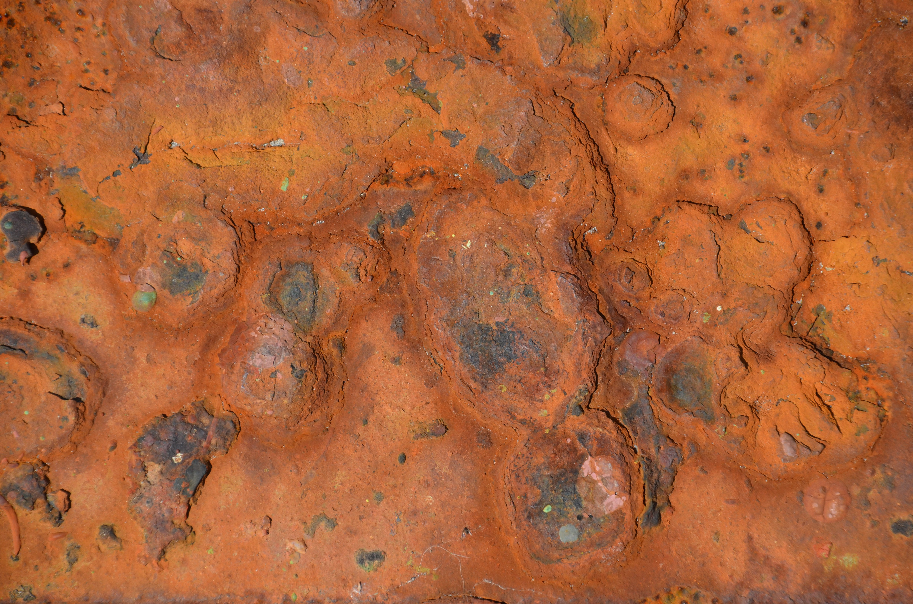
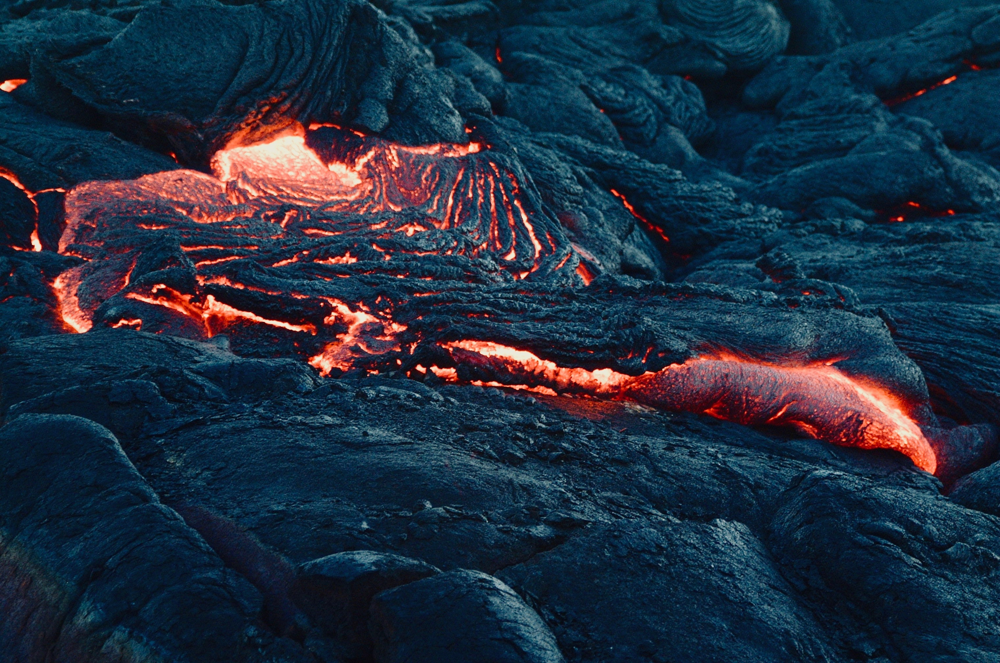
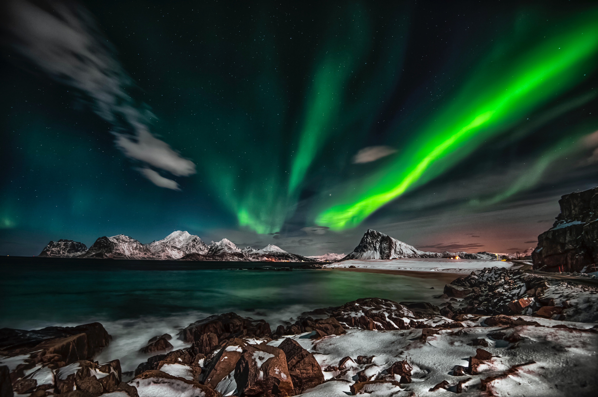
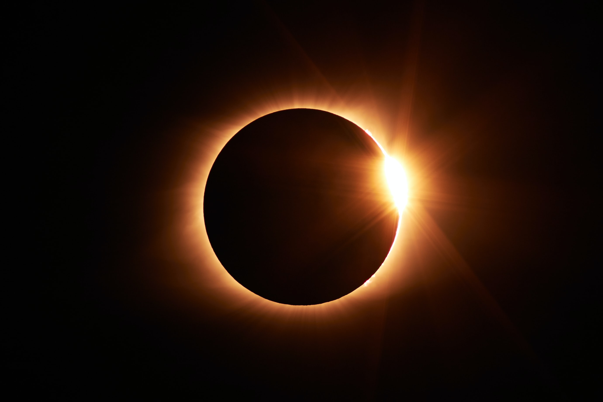

Cappuccino Phenomenon,Sea foam, ocean foam, beach foam, or spume is a type of foam created by the agitation of seawater, particularly when it contains higher concentrations of dissolved organic matter (including proteins, lignins, and lipids) derived from sources such as the offshore breakdown of algal blooms.These compounds can act as surfactants or foaming agents. As the seawater is churned by breaking waves in the surf zone adjacent to the shore, the surfactants under these turbulent conditions trap air, forming persistent bubbles that stick to each other through surface tension. Sea foam is a global phenomenon and it varies depending on location and the potential influence of the surrounding marine, freshwater, and/or terrestrial environments.Due to its low density and persistence, foam can be blown by strong on-shore winds from the beach face inland.
Oxidation Process

Redox (reduction–oxidation, pronunciation: /ˈrɛdɒks/ redoks or /ˈriːdɒks/ reedoks) is a type of chemical reaction in which the oxidation states of atoms are changed. Redox reactions are characterized by the actual or formal transfer of electrons between chemical species, most often with one species (the reducing agent) undergoing oxidation (losing electrons) while another species (the oxidizing agent) undergoes reduction (gains electrons).The chemical species from which the electron is removed is said to have been oxidized, while the chemical species to which the electron is added is said to have been reduced. In other words:
Oxidation is the loss of electrons or an increase in the oxidation state of an atom, an ion, or of certain atoms in a molecule.
Reduction is the gain of electrons or a decrease in the oxidation state of an atom, an ion, or of certain atoms in a molecule.
Many reactions in organic chemistry are redox reactions due to changes in oxidation states but without distinct electron transfer. For example, during the combustion of wood with molecular oxygen, the oxidation state of carbon atoms in the wood increases and that of oxygen atoms decreases as carbon dioxide and water are formed. The oxygen atoms undergo reduction, formally gaining electrons, while the carbon atoms undergo oxidation, losing electrons. Thus oxygen is the oxidizing agent and carbon is the reducing agent in this reaction.
Although oxidation reactions are commonly associated with the formation of oxides from oxygen molecules, oxygen is not necessarily included in such reactions, as other chemical species can serve the same function.
Redox reactions can occur relatively slowly, as in the formation of rust, or much more rapidly, as in the case of burning fuel. There are simple redox processes, such as the oxidation of carbon to yield carbon dioxide (CO2) or the reduction of carbon by hydrogen to yield methane (CH4), and more complex processes such as the oxidation of glucose (C6H12O6) in the human body. Analysis of bond energies and ionization energies in water allow calculation of the redox potentials.
Volcanoes

A volcano is a rupture in the crust of a planetary-mass object, such as Earth, that allows hot lava, volcanic ash, and gases to escape from a magma chamber below the surface.
Earth's volcanoes occur because its crust is broken into 17 major, rigid tectonic plates that float on a hotter, softer layer in its mantle.Therefore, on Earth, volcanoes are generally found where tectonic plates are diverging or converging, and most are found underwater. For example, a mid-oceanic ridge, such as the Mid-Atlantic Ridge, has volcanoes caused by divergent tectonic plates whereas the Pacific Ring of Fire has volcanoes caused by convergent tectonic plates. Volcanoes can also form where there is stretching and thinning of the crust's plates, e.g., in the East African Rift and the Wells Gray-Clearwater volcanic field and Rio Grande Rift in North America. This type of volcanism falls under the umbrella of "plate hypothesis" volcanism.Volcanism away from plate boundaries has also been explained as mantle plumes. These so-called "hotspots", for example Hawaii, are postulated to arise from upwelling diapirs with magma from the core–mantle boundary, 3,000 km deep in the Earth. Volcanoes are usually not created where two tectonic plates slide past one another.
Large eruptions can affect ambient temperature as ash and droplets of sulfuric acid obscure the sun and cool the Earth's troposphere; historically, large volcanic eruptions have been followed by volcanic winters which have caused catastrophic famines.
Polar Light

Aurora or Polar Light(plural: auroras or aurorae),sometimes referred to as polar lights (aurora polaris), northern lights (aurora borealis), or southern lights (aurora australis), is a natural light display in the Earth's sky, predominantly seen in high-latitude regions (around the Arctic and Antarctic).
Auroras are the result of disturbances in the magnetosphere caused by solar wind. These disturbances are sometimes strong enough to alter the trajectories of charged particles in both solar wind and magnetospheric plasma. These particles, mainly electrons and protons, precipitate into the upper atmosphere (thermosphere/exosphere).
The resulting ionization and excitation of atmospheric constituents emit light of varying color and complexity. The form of the aurora, occurring within bands around both polar regions, is also dependent on the amount of acceleration imparted to the precipitating particles. Precipitating protons generally produce optical emissions as incident hydrogen atoms after gaining electrons from the atmosphere. Proton auroras are usually observed at lower latitudes.
Supermoon
A supermoon is a full moon or a new moon that nearly coincides with perigee—the closest that the Moon comes to the Earth in its elliptic orbit—resulting in a slightly larger-than-usual apparent size of the lunar disk as viewed from Earth.The technical name is a perigee syzygy (of the Earth–Moon–Sun system) or a full (or new) Moon around perigee.The term supermoon is astrological in origin and has no precise astronomical definition.
The real association of the Moon with both oceanic and crustal tides has led to claims that the supermoon phenomenon may be associated with increased risk of events like earthquakes and volcanic eruptions, but no such link has been found.
The opposite phenomenon, an apogee syzygy or a full (or new) Moon around apogee, has been called a micromoon.
eclipse

A solar eclipse occurs when a portion of the Earth is engulfed in a shadow cast by the Moon which fully or partially blocks sunlight. This occurs when the Sun, Moon and Earth are aligned. Such alignment coincides with a new moon (syzygy) indicating the Moon is closest to the ecliptic plane.In a total eclipse, the disk of the Sun is fully obscured by the Moon. In partial and annular eclipses, only part of the Sun is obscured.
If the Moon were in a perfectly circular orbit, a little closer to the Earth, and in the same orbital plane, there would be total solar eclipses every new moon. However, since the Moon's orbit is tilted at more than 5 degrees to the Earth's orbit around the Sun, its shadow usually misses Earth. A solar eclipse can only occur when the Moon is close enough to the ecliptic plane during a new moon. Special conditions must occur for the two events to coincide because the Moon's orbit crosses the ecliptic at its orbital nodes twice every draconic month (27.212220 days) while a new moon occurs one every synodic month (29.530587981 days). Solar (and lunar) eclipses therefore happen only during eclipse seasons resulting in at least two, and up to five, solar eclipses each year; no more than two of which can be total eclipses.
Total eclipses are rare because the timing of the new moon within the eclipse season needs to be more exact for an alignment between the observer (on Earth) and the centers of the Sun and Moon. In addition, the elliptical orbit of the Moon often takes it far enough away from Earth that its apparent size is not large enough to block the Sun entirely. Total solar eclipses are rare at any particular location because totality exists only along a narrow path on the Earth's surface traced by the Moon's full shadow or umbra.
An eclipse is a natural phenomenon. However, in some ancient and modern cultures, solar eclipses were attributed to supernatural causes or regarded as bad omens. A total solar eclipse can be frightening to people who are unaware of its astronomical explanation, as the Sun seems to disappear during the day and the sky darkens in a matter of minutes.
Since looking directly at the Sun can lead to permanent eye damage or blindness, special eye protection or indirect viewing techniques are used when viewing a solar eclipse. It is safe to view only the total phase of a total solar eclipse with the unaided eye and without protection. This practice must be undertaken carefully, though the extreme fading of the solar brightness by a factor of over 100 times in the last minute before totality makes it obvious when totality has begun and it is for that extreme variation and the view of the solar corona that leads people to travel to the zone of totality (the partial phases span over two hours while the total phase can only last a maximum of 7.5 minutes for any one location and is usually less). People referred to as eclipse chasers or umbraphiles will travel even to remote locations to observe or witness predicted central solar eclipses.
Contact Us
If you have any questions, do not hesitate to ask them
Phone : +00 111111
Email : Natutal-Phenomena@mail.com
About
This page talks about
the natural phenomena that the Earth has witnessed, as they vary between bewildering and familiar, and between the usual and the rare,and we mention here a group of these phenomena,for example geological natural phenomena, biological natural phenomena, chemical natural phenomena, optical natural phenomena and other natural phenomena.